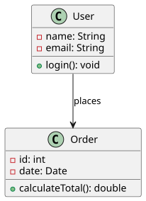
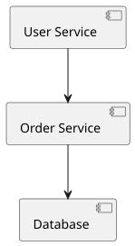
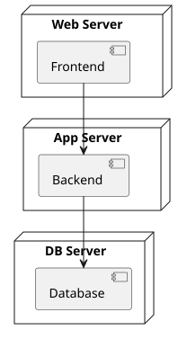
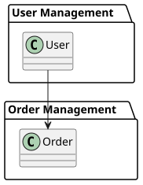
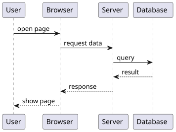
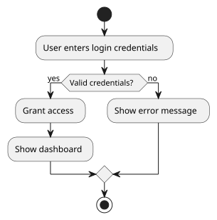
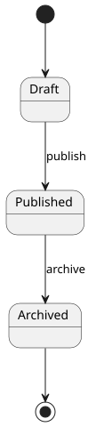
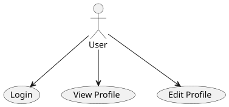
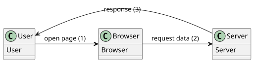
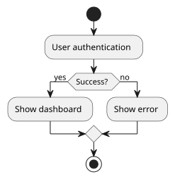

📝 Диаграммы в документации и проектировании¶
![@startuml name projectTemplate
!include template/C4_Container.puml
!include template/tags.puml
!include template/icons.puml
!include template/relations.puml
!include template/boundaries.puml
skinparam defaultFontName "Source Code Pro"
LAYOUT_TOP_DOWN()
'LAYOUT_LEFT_RIGHT()
' --- VPS ---
Container_Boundary(VPS, "VPS", $tags="infrastructure") {
Container_Ext(app_1, "app", "Контейнер", "Приложение, развернутое в Docker на сервере", $tags="docker", $sprite="docker")
}
' --- GitHub ---
Container_Boundary(GitHub, "GitHub", $tags="external") {
Container_Ext(github_pages, "GitHub Pages", "Сервис", "Для хостинга статической документации и сайта", $tags="docs", $sprite="github_badge")
Container_Ext(github_actions, "GitHub Actions", "CI/CD", "Для автоматизации процессов сборки, тестирования и деплоя", $tags="ci", $sprite="github_badge")
Container_Ext(github_secrets, "GitHub Secrets", "Хранилище", "Для безопасного хранения и управления секретами", $tags="config", $sprite="github_badge")
}
' --- projectTemplate ---
Container_Boundary(projectTemplate, "projectTemplate", $tags="project") {
' --- CI/CD ---
Container_Boundary(cicd, ".github/", "Workflows", $tags="ci-cd") {
Container(deploy_app, "deploy_app.yml", "YAML", "Воркфлоу для автоматического деплоя", $tags="ci", $sprite="github_badge")
Container(deploy_docs, "deploy_docs.yml", "YAML", "Воркфлоу для сборки документации", $tags="ci", $sprite="github_badge")
Container(makefile, "Makefile", "Автоматизация", "", $tags="utils", $sprite="tools")
}
' --- vscode ---
Container_Boundary(vscode, ".vscode", "VSCode", $tags="utility") {
Container(extensions_json, "extensions.json", "JSON", "Расширения для VS Code", $tags="misc", $sprite="file")
Container(settings_json, "settings.json", "JSON", "Настройки для VS Code", $tags="misc", $sprite="file")
}
' --- docker ---
Container_Boundary(docker, "Docker", "Docker", $tags="utility") {
Container(dockerfile, "Dockerfile", "Файл", "Инструкции для создания нового образа Docker", $tags="docker", $sprite="docker")
Container(docker_compose_yaml, "docker-compose.yaml", "Файл", "Система сборки, запуска, управления контейнерами Docker", $tags="docker", $sprite="docker")
Container(dockerignore, ".dockerignore", "", "Файлы и папки для игнора docker", $tags="misc", $sprite="file")
}
' --- git ---
Container_Boundary(Git, ".git", "Git", $tags="utility") {
Container(gitignore, ".gitignore", "", "Файлы и папки для игнора git", $tags="misc", $sprite="file")
Container(copier_yaml, "copier.yaml", "Файл", "Позволяет обновлять проекты на основе шаблона", $tags="misc", $sprite="file")
Container(pre_commit, ".pre-commit-config.yaml", "Файл", "Проверяет коммиты перед пушем", $tags="misc", $sprite="file")
}
' --- env ---
Container_Boundary(ENV, "env", "Окружение", $tags="utility") {
Container(env, ".env", "Переменные окружения", $tags="config", $sprite="file")
Container(requirements_txt, "requirements.txt", "Файл", "", $tags="misc", $sprite="file")
}
' --- configs/ ---
Container_Boundary(configs, "configs", "Configs", $tags="utility") {
Container(config_py, "config.py", "Python", "Модуль для конфигурации приложения", $tags="config", $sprite="python")
}
' --- docs/ ---
Container_Boundary(docs, "docs", "Docs", $tags="project") {
Container(index_rst, "index.rst", "reST", "Дерево документации", $tags="docs", $sprite="file")
Container(all_md, "Файлы Markdown", "Markdown", "Файлы с описанием документации", $tags="docs", $sprite="file")
Container(conf_py, "conf.py", "Python", "Настройки Sphinx", $tags="docs", $sprite="python")
}
' --- src/ ---
Container_Boundary(src, "src", "Исходный код", $tags="project") {
Container(main_py, "main.py", "Python", "Точка входа в приложение", $tags="code", $sprite="python")
}
' --- utils ---
Container_Boundary(utils, "utils", "Утилиты", $tags="project") {
Container(logger_py, "logger.py", "Python", "Модуль для записи логов приложения", $tags="utils", $sprite="python")
}
' --- aux ---
Container_Boundary(aux, "aux", "Вспомогательные модули", $tags="project") {
Container(tests_folder, "tests/", "Папка", "Модули для тестирования", $tags="tests", $sprite="folder_open")
Container(tools_folder, "tools/", "Папка", "Вспомогательные модули", $tags="misc", $sprite="folder_open")
}
}
' ===== CI/CD Поток =====
Rel(cicd, github_actions, "Выполняет workflow", "GitHub Runner", $tags="infrastructure")
Rel(github_actions, app_1, "Разворачивает приложение", "SSH, Docker", $tags="infrastructure")
Rel(github_actions, github_pages, "Разворачивает документацию на", "gh-pages branch", $tags="infrastructure")
Rel(makefile, deploy_app, "Автоматизация сборки", "make build", $tags="infrastructure")
' ===== Docker и Развертывание =====
Rel(deploy_app, dockerfile, "Использует", "", $tags="infrastructure")
Rel(dockerignore, dockerfile, "Исключает файлы", ".dockerignore rules", $tags="infrastructure")
Rel(dockerfile, env, "Читает переменные окружения", "", $tags="utility")
Rel(docker_compose_yaml, dockerfile, "Оркестрирует запуск", "docker-compose up", $tags="infrastructure")
Rel(dockerfile, requirements_txt, "Устанавливает зависимости", "RUN pip install", $tags="infrastructure")
' ===== Разработка =====
Rel(config_py, src, "Настраивает приложение, управляет путями", "class Config", $tags="calls")
Rel(config_py, env, "Читает переменные окружения", "", $tags="utility")
Rel(logger_py, src, "Логирует приложение", "Python import", $tags="utility")
' ===== Документация =====
Rel(conf_py, index_rst, "Настраивает сборку документации", "Python config", $tags="utility")
Rel(index_rst, all_md, "Включает в себя", "reST includes", $tags="calls")
SHOW_LEGEND()
@enduml](../_images/plantuml-6a5f6cd69de4de64497462226b5de5134b0c08d9.svg)
tags - работает
icons - работает
relations - работает #TODO: добавить спрайты в relations
boundaries - работает
diagrams/
└── template/
├── style.puml # Общий стиль (цвета, шрифты, теги)
├── fonts.puml # Настройки шрифтов
├── arrows.puml # Стили стрелок
├── tags.puml # Теги и цвета элементов (твой список)
├── boundaries.puml # Стили границ (для контейнеров и т.д.)
├── icons.puml # Стили иконок (если используются)
├── legend.puml # Шаблон легенды
├── layout.puml # Настройки размещения (отступы, размеры)
└── theme.puml # Комбинированный темплейт (включает всё)
Девиконы¶
Импорт девиконов
!define DEVICONS https://raw.githubusercontent.com/tupadr3/plantuml-icon-font-sprites/main/icons/devicons
!define DEVICONS2 https://raw.githubusercontent.com/tupadr3/plantuml-icon-font-sprites/main/icons/devicons2
!define FONTAWESOME5 https://raw.githubusercontent.com/tupadr3/plantuml-icon-font-sprites/main/icons/font-awesome-5
🧩 Инструменты и платформы
!include DEVICONS/git.puml
!include DEVICONS/github_badge.puml
!include DEVICONS/docker.puml
!include DEVICONS/google_drive.puml
!include DEVICONS/terminal.puml
!include DEVICONS2/git_woodmark.puml
!include DEVICONS2/github_original_woodmark.puml
!include DEVICONS2/grafana_woodmark.puml
!include DEVICONS2/google.puml
!include DEVICONS2/vscode.puml
💻 Языки и технологии
!include DEVICONS/java.puml
!include DEVICONS/javascript.puml
!include DEVICONS/python.puml
!include DEVICONS/php.puml
!include DEVICONS/html5.puml
!include DEVICONS/css3.puml
!include DEVICONS/markdown.puml
🗄️ Базы данных и кеш
!include DEVICONS/database.puml
!include DEVICONS/postgresql.puml
!include DEVICONS/redis.puml
!include DEVICONS2/redis_woodmark.puml
🌐 Браузеры и ОС
!include DEVICONS/chrome.puml
!include DEVICONS/firefox.puml
!include DEVICONS/linux.puml
!include DEVICONS/windows.puml
⚙️ Системные и утилитарные иконки
!include FONTAWESOME5/cogs.puml
!include FONTAWESOME5/tools.puml
!include FONTAWESOME5/share_alt.puml
!include FONTAWESOME5/link.puml
!include FONTAWESOME5/telegram.puml
📁 Файлы и документы
!include FONTAWESOME5/book_open.puml
!include FONTAWESOME5/file_alt.puml
!include FONTAWESOME5/folder_open.puml
Универсальные стили¶
Тестовый шаблон диаграммы¶
@startuml
!include https://raw.githubusercontent.com/plantuml-stdlib/C4-PlantUML/master/C4_Container.puml
' --- Определения для сторонних библиотек ---
!define DEVICONS https://raw.githubusercontent.com/tupadr3/plantuml-icon-font-sprites/tree/main/icons/devicons
!define DEVICONS2 https://raw.githubusercontent.com/tupadr3/plantuml-icon-font-sprites/tree/main/icons/devicons2
!define FONTAWESOME5 https://raw.githubusercontent.com/tupadr3/plantuml-icon-font-sprites/tree/main/icons/font-awesome-5font-awesome-5
' --- Импорт иконок ---
!include DEVICONS/git.puml
!include DEVICONS/github_badge.puml
!include DEVICONS/docker.puml
!include DEVICONS/google_drive.puml
!include DEVICONS/terminal.puml
!include DEVICONS2/git_woodmark.puml
!include DEVICONS2/github_original_woodmark.puml
!include DEVICONS2/grafana_woodmark.puml
!include DEVICONS2/google.puml
!include DEVICONS2/vscode.puml
!include DEVICONS/java.puml
!include DEVICONS/javascript.puml
!include DEVICONS/python.puml
!include DEVICONS/php.puml
!include DEVICONS/html5.puml
!include DEVICONS/css3.puml
!include DEVICONS/markdown.puml
!include DEVICONS/database.puml
!include DEVICONS/postgresql.puml
!include DEVICONS/redis.puml
!include DEVICONS2/redis_woodmark.puml
!include DEVICONS/chrome.puml
!include DEVICONS/firefox.puml
!include DEVICONS/linux.puml
!include DEVICONS/windows.puml
!include FONTAWESOME5/ban.puml
!include FONTAWESOME5/bluetooth.puml
!include FONTAWESOME5/cogs.puml
!include FONTAWESOME5/tools.puml
!include FONTAWESOME5/sync_alt.puml
!include FONTAWESOME5/share_alt.puml
!include FONTAWESOME5/link.puml
!include FONTAWESOME5/telegram.puml
!include FONTAWESOME5/toggle_off.puml
!include FONTAWESOME5/toggle_on.puml
!include FONTAWESOME5/book_open.puml
!include FONTAWESOME5/bookmark.puml
!include FONTAWESOME5/file_alt.puml
!include FONTAWESOME5/file_code.puml
!include FONTAWESOME5/file_csv.puml
!include FONTAWESOME5/file_excel.puml
!include FONTAWESOME5/file_pdf.puml
!include FONTAWESOME5/folder_open.puml
!include FONTAWESOME5/lock.puml
!include FONTAWESOME5/lock_open.puml
!include FONTAWESOME5/map_marked_alt.puml
' --- Универсальные стили контейнеров ---
AddElementTag("config", $bgColor="#e0e0e0", $fontColor="black", $borderColor="#b0b0b0")
AddElementTag("data", $bgColor="#cfe2ff", $fontColor="black", $borderColor="#9ec5fe")
AddElementTag("code", $bgColor="#d2f4ea", $fontColor="black", $borderColor="#8fdcc1")
AddElementTag("utils", $bgColor="#ffe5e5", $fontColor="black", $borderColor="#e59898")
AddElementTag("docs", $bgColor="#fff1d0", $fontColor="black", $borderColor="#ffd27f")
AddElementTag("tests", $bgColor="#fcd5ce", $fontColor="black", $borderColor="#f08080")
AddElementTag("ci", $bgColor="#d0e2ff", $fontColor="black", $borderColor="#89b4f8")
AddElementTag("docker", $bgColor="#f5e6cc", $fontColor="black", $borderColor="#d1b37f")
AddElementTag("api", $bgColor="#d1ecf1", $fontColor="black", $borderColor="#87c1d4")
AddElementTag("logging", $bgColor="#fff3cd", $fontColor="black", $borderColor="#ffdf7e")
AddElementTag("external", $bgColor="#e2d5f9", $fontColor="black", $borderColor="#c0a6f3")
AddElementTag("misc", $bgColor="#f8f9fa", $fontColor="black", $borderColor="#dee2e6")
' --- Система и внешние сущности ---
System_Boundary(mySystem, "Main Application System") {
Container(app, "Main Application", "Java", "Core application logic", $tags="code", $sprite="java")
Container(api, "API Gateway", "Node.js", "Handles API requests", $tags="api", $sprite="javascript")
Container(db, "Main Database", "PostgreSQL", "Primary application data", $tags="data", $sprite="postgresql")
Container(cache, "Cache", "Redis", "In-memory data caching", $tags="data", $sprite="redis")
Container(config_store, "Config Store", "JSON", "Centralized configuration", $tags="config", $sprite="file_alt")
Container(log_aggregator, "Log Aggregator", "Elasticsearch", "Collects application logs", $tags="logging", $sprite="file_alt")
Container(auth_service, "Auth Service", "OAuth2", "Handles authentication", $tags="utils", $sprite="lock")
Container(notification_service, "Notification Service", "SMTP", "Sends notifications", $tags="utils", $sprite="telegram")
Container(file_service, "File Service", "S3", "Manages file uploads", $tags="utils", $sprite="folder_open")
Container(test_runner, "Test Runner", "JUnit", "Executes test suites", $tags="tests", $sprite="github_badge")
Container(docs_gen, "Docs Generator", "Swagger", "Generates API docs", $tags="docs", $sprite="book_open")
Container(ci_cd, "CI/CD Pipeline", "Jenkins", "Builds and deploys", $tags="ci", $sprite="cogs")
Container(container_registry, "Container Registry", "DockerHub", "Stores Docker images", $tags="docker", $sprite="docker")
Container(metrics_service, "Metrics Service", "Prometheus", "Collects metrics", $tags="utils", $sprite="sync_alt")
Container(grafana, "Grafana", "Monitoring", "Metrics dashboard", $tags="utils", $sprite="grafana_original")
Container(load_balancer, "Load Balancer", "Nginx", "Distributes traffic", $tags="api", $sprite="share_alt")
}
System_Ext(ext_db, "External Database", "SQL", "External partner data", $tags="external", $sprite="database")
System_Ext(ext_auth, "External Identity Provider", "SAML", "SSO Provider", $tags="external", $sprite="lock_open")
System_Ext(ext_storage, "External Storage", "Cloud", "Cloud file storage", $tags="external", $sprite="google_drive")
Person(user_web, "Web User", "Uses the web application", $tags="misc", $sprite="chrome")
Person(user_mobile, "Mobile User", "Uses the mobile application", $tags="misc", $sprite="terminal")
' --- Связи ---
Rel(user_web, load_balancer, "Uses HTTPS", "HTTPS")
Rel(user_mobile, api, "Uses REST API", "HTTPS")
Rel(load_balancer, app, "Forwards requests", "HTTP")
Rel(api, app, "Forwards requests", "HTTP")
Rel(app, db, "Reads/Writes data", "JDBC")
Rel(app, cache, "Reads/Writes cache", "Redis Protocol")
Rel(app, config_store, "Fetches config", "HTTP")
Rel(app, auth_service, "Validates tokens", "HTTP")
Rel(app, notification_service, "Sends notifications", "HTTP")
Rel(app, file_service, "Uploads/downloads files", "HTTP")
Rel(app, log_aggregator, "Sends logs", "HTTP")
Rel(test_runner, app, "Tests API", "HTTP")
Rel(docs_gen, api, "Fetches API spec", "HTTP")
Rel(ci_cd, container_registry, "Pushes images", "Docker API")
Rel(ci_cd, app, "Deploys application", "Deployment API")
Rel(metrics_service, app, "Fetches metrics", "Prometheus Format")
Rel(grafana, metrics_service, "Queries metrics", "HTTP")
Rel(auth_service, ext_auth, "Delegates authentication", "SAML")
Rel(file_service, ext_storage, "Stores files", "Cloud API")
Rel(app, ext_db, "Syncs data", "Custom Protocol")
@enduml
Теория диаграмм¶
1. Введение. Подход Diagrams as a Code¶
Диаграммы — это визуальное представление структуры, процессов и взаимодействий в системе. Они помогают:
Упростить восприятие сложной информации.
Улучшить коммуникацию между членами команды.
Документировать архитектуру и облегчить внедрение новых разработчиков.
Выявлять и устранять архитектурные проблемы на ранних этапах.
Diagrams as a Code — это подход, при котором диаграммы описываются с помощью текстового кода, а не рисуются вручную в графических редакторах. Диаграммы генерируются автоматически из текстового описания с помощью специальных инструментов, таких как PlantUML, Mermaid, Graphviz и др.
Преимущества:
Версионирование — текстовые файлы с описанием диаграмм легко хранить в системах контроля версий (например, Git), отслеживать изменения и работать в команде.
Автоматизация — диаграммы можно генерировать в рамках CI/CD, обновлять при изменении кода или архитектуры.
Простота редактирования — изменение текста проще, чем редактирование графического файла.
Повторное использование — шаблоны и компоненты можно переиспользовать в разных диаграммах.
Интеграция с документацией — диаграммы можно встраивать в Markdown, Confluence, GitLab и другие системы.
Недостатки:
Кривая обучения — требует знания синтаксиса инструментов (например, PlantUML или Mermaid).
Ограниченная гибкость — не все сложные визуальные эффекты или стили можно реализовать.
Зависимость от инструментов — нужно обеспечивать доступ к инструментам генерации диаграмм в вашем окружении.
В проекте используются различные инструменты для визуализации архитектуры и процессов. Ниже приведена таблица с описанием, сгруппированная по типу:
Архитектурный подход |
C4 Model |
Подход к моделированию архитектуры ПО на четырёх уровнях: контекст, контейнеры, компоненты и код. Помогает структурированно описывать архитектуру систем. |
Язык моделирования |
UML |
Unified Modeling Language — стандартный язык для визуализации, проектирования и документирования архитектуры программных систем. Включает в себя множество типов диаграмм: классов, последовательностей, деятельности и др. |
Язык описания диаграмм |
PlantUML |
Инструмент, позволяющий создавать диаграммы из текстового описания. Поддерживает UML, C4, ER-диаграммы, Gantt и другие. Упрощает автоматизацию и версионирование диаграмм. |
Расширение |
C4-PlantUML |
Расширение PlantUML для поддержки синтаксиса C4 Model. Позволяет быстро создавать диаграммы по модели C4 в текстовом формате. |
Сервис визуализации |
Kroki |
Сервис для рендеринга диаграмм, поддерживает PlantUML, Mermaid и другие форматы. Может использоваться как самостоятельный сервер или интегрироваться с GitLab, Confluence и Markdown. |
Инструмент моделирования |
Graphviz |
Графическая библиотека для автоматического построения диаграмм. Часто используется в автоматических генераторах архитектурных схем. |
2. UML (Unified Modeling Language)¶
UML (Unified Modeling Language) — это унифицированный язык моделирования, разработанный для описания, визуализации, проектирования и документирования программных систем. Он был создан в 1990-х годах и стал стандартом де-факто в индустрии разработки ПО.
Цели UML:
Моделирование архитектуры — позволяет описать структуру и поведение системы до её реализации.
Документирование — фиксирует архитектурные решения и делает их доступными для команды.
Коммуникация — обеспечивает единый язык общения между разработчиками, архитекторами, тестировщиками и другими участниками проекта.
Проектирование — помогает планировать и разрабатывать системы, учитывая связи между компонентами и их поведение.
Анализ и проверка — позволяет выявлять потенциальные проблемы на этапе проектирования.
Концепции UML:
Диаграммы — графические представления различных аспектов системы.
Элементы — объекты, классы, акторы, компоненты и т.д.
Отношения — связи между элементами (наследование, ассоциации, зависимости и др.).
Нотации — стандартные обозначения, используемые в диаграммах.
Типы UML-диаграмм¶
UML включает в себя множество типов диаграмм, которые делятся на структурные и поведенческие.
Структурные диаграммы¶
Структурные диаграммы показывают статические аспекты системы, её компоненты, классы, объекты и их отношения.
Диаграмма классов (Class Diagram)
Описывает структуру системы, показывая классы, их атрибуты, методы и связи.
Используется для проектирования архитектуры объектно-ориентированного ПО.
Диаграмма объектов (Object Diagram)
Показывает экземпляры классов и их связи в определённый момент времени.
Полезна для иллюстрации примеров работы системы.Диаграмма компонентов (Component Diagram)
Отображает компоненты системы и зависимости между ними.
Помогает понять, как организована архитектура на уровне модулей и библиотек.
Диаграмма развёртывания (Deployment Diagram)
Показывает, как компоненты системы размещены на физических узлах (серверах, компьютерах).
Используется при проектировании инфраструктуры.
Диаграмма пакетов (Package Diagram)
Представляет структуру системы в виде иерархии пакетов.
Полезна при логическом разделении кода.
Диаграмма профилей (Profile Diagram)
Используется для расширения UML с помощью пользовательских стереотипов.
Применяется при создании доменных языков моделирования.
Поведенческие диаграммы¶
Поведенческие диаграммы описывают динамические аспекты системы, такие как взаимодействие между объектами, изменения состояний, потоки данных и т.д.
Диаграмма последовательности (Sequence Diagram)
Показывает, как объекты взаимодействуют друг с другом в определённой временной последовательности.
Используется для моделирования сценариев использования.
Диаграмма деятельности (Activity Diagram)
Описывает поток выполнения процесса, включая параллельные и условные ветвления.
Аналогична блок-схеме, но более мощная и гибкая.
Диаграмма состояний (State Machine Diagram / State Diagram)
Показывает, как объект изменяет своё состояние в ответ на события.
Полезна при моделировании жизненного цикла объекта или системы.
Диаграмма вариантов использования (Use Case Diagram)
Описывает, как пользователи (акторы) взаимодействуют с системой.
Помогает определить функциональные требования к системе.
Диаграмма коммуникации (Communication Diagram)
Показывает взаимодействие между объектами с акцентом на связи.
Аналог диаграммы последовательности, но с другим акцентом.
Диаграмма взаимодействия (Interaction Overview Diagram)
Комбинирует элементы диаграмм деятельности и последовательности.
Подходит для описания сложных сценариев взаимодействия.
Недостатки UML¶
Чрезмерная сложность языка — UML был задуман как универсальный язык, и создатели стремились объединить все возможные диаграммы в единую метамодель. Это привело к избыточной сложности, где простые задачи требуют изучения множества нотаций и правил.
Недостаточная поддержка в инструментах — не все инструменты моделирования поддерживают все нотации UML в полном объёме. Это может ограничивать возможности при создании сложных диаграмм.
Ограниченная применимость вне ПО — UML был разработан в первую очередь для моделирования программных систем. Его использование в других областях (например, бизнес-процессы, проектирование БД) может быть не всегда удобным и логичным.
Сложности с версионированием и актуальностью — диаграммы в виде графических файлов сложно хранить в системах контроля версий, а также поддерживать в актуальном состоянии при изменении архитектуры.
Снижение ясности при избыточном использовании — если использовать слишком много диаграмм или нотаций, это может запутать, а не прояснить структуру и поведение системы.
3. PlantUML¶
PlantUML — это мощный и удобный инструмент, который позволяет создавать широкий спектр диаграмм с помощью простого текстового синтаксиса. Он идеально подходит для тех, кто хочет использовать подход “Diagrams as a Code” — создавать диаграммы из текста, а не вручную рисовать их в графических редакторах.
Преимущества:
Поддержка множества типов диаграмм — PlantUML поддерживает не только все основные UML-диаграммы (классы, последовательности, состояния, компоненты и т.д.), но и множество других: диаграммы Ганта, ER-модели, MindMap, сетевые схемы, JSON/YAML-структуры и даже математические выражения.
Интеграция с популярными системами — PlantUML работает с GitLab, GitHub, Confluence, Notion, Obsidian, IDE (например, IntelliJ, VS Code), Markdown-редакторами и другими инструментами, что делает его гибким и удобным в использовании.
Поддержка визуальных возможностей — PlantUML позволяет добавлять гиперссылки, иконки, форматирование, смайлики, математические выражения и многое другое, что делает диаграммы не только информативными, но и визуально привлекательными.
Поддержка разных форматов вывода — диаграммы можно экспортировать в PNG, SVG, LaTeX и даже в ASCII-арте, что делает их подходящими для любых задач: от презентаций до технической документации.
Независимость от инструментов — PlantUML не требует сложных графических редакторов, работает на основе текста и может быть запущен локально, на сервере или в облаке (например, через Kroki).
Движки — PlantUML поддерживает разные движки (Graphviz, Smetana, VizJs, ELK), что позволяет настраивать внешний вид диаграмм под конкретные задачи и предпочтения.
Открытый исходный код — PlantUML бесплатен и с открытым исходным кодом, что делает его доступным для любого проекта.
Синтаксис PlantUML¶
PlantUML использует простой и интуитивно понятный текстовый синтаксис, который позволяет описывать диаграммы с помощью понятных команд. Ниже приведены основные элементы синтаксиса, сгруппированные по функциональности.
Базовые элементы¶
#TODO: добавить сюда, что нужно использовать name после startuml
Определения и импорт¶
!define |
Определяет псевдонимы или макросы |
|
!include |
Подключает внешние файлы |
|
!includeurl |
Подключает файлы по URL |
|
Иконки и изображения¶
!sprite |
Определяет пользовательские иконки |
|
!tag |
Определяет пользовательские теги |
|
Управление стилями и темами¶
skinparam |
Настройка внешнего вида диаграммы |
|
!theme |
Подключение предустановленных тем |
|
!startsub … !endsub |
Группировка элементов диаграммы |
|
Директивы и настройки¶
!pragma |
Глобальные параметры (движок, опции) |
|
title |
Добавляет заголовок диаграммы |
|
caption |
Добавляет подпись под диаграммой |
|
Заметки и аннотации¶
note |
Добавляет заметку |
|
note right of |
Заметка справа от элемента |
|
note left of |
Заметка слева от элемента |
|
Условия и циклы (в Activity Diagrams)¶
if … then … else … endif |
Условный блок |
|
while … endwhile |
Цикл |
|
repeat … until |
Цикл с постусловием |
|
Ссылки и гиперссылки¶
[[url]] |
Добавляет гиперссылку к элементу |
|
link |
Ссылка к связи между элементами |
|
4. C4 Model¶
C4 PlantUML¶
5. Другие типы диаграмм в PlantUML¶
ER-диаграммы (моделирование БД)
Gantt-диаграммы
Mind maps
Timeline
Примеры использования в проекте.
6. Kroki¶
Что такое Kroki: сервис для рендеринга PlantUML, Mermaid и др.
Возможности:
Поддержка нескольких языков диаграмм
REST API
Интеграция с Markdown, Confluence, GitLab и т.д.
Как использовать Kroki в проекте.
7. Mermaid (как альтернатива PlantUML)¶
Обзор Mermaid: синтаксис, возможности.
Сравнение с PlantUML.
Где используется (GitHub, Notion, Obsidian и т.д.).
8. Рекомендации по использованию диаграмм¶
Какие диаграммы использовать в каких случаях.
Стандартизация диаграмм в проекте.
Хранение и версионирование диаграмм (например, в Git).
Обновление диаграмм при изменении архитектуры.
9. Примеры диаграмм из проекта¶
Примеры C4-диаграмм, UML-диаграмм и т.д.
Объяснение структуры и логики.
Ссылки на исходники (если есть).
10. Заключение¶
Значение диаграмм для проекта.
Как поддерживать диаграммы актуальными.
Следующие шаги: автоматизация, CI/CD, интеграция с документацией.